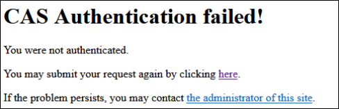
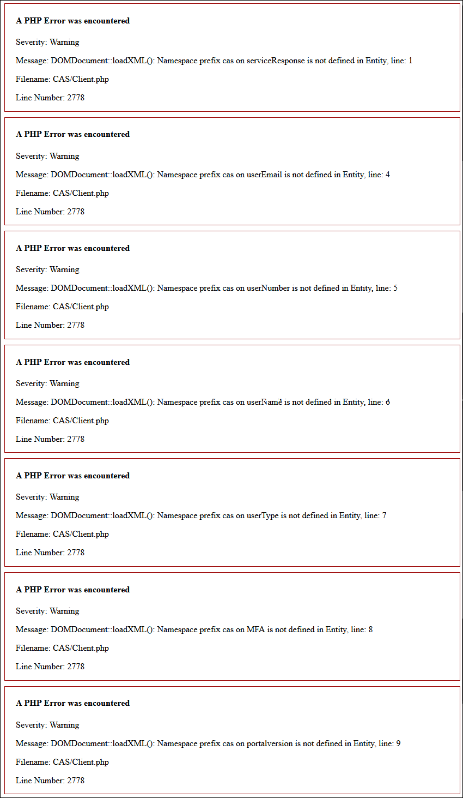

Setting up CAS to make it work with the school CMS

phpCAS 1.3.2 is included in the school CMS. Two files needed to be edited to make phpCAS work with hkuportal:
- Edit
html/theorigo/application/libraries/CAS/Autoload.php - Edit
html/theorigo/application/libraries/CAS/Client.php
Edit Autoload.php
error in Autoload.php
Turn on error reporting in html/index.php
Deprecated: __autoload() is deprecated, use spl_autoload_register() instead in /disk1/sbm/sbms/html/theorigo/application/libraries/CAS/Autoload.php on line 91
Edit html/theorigo/application/libraries/CAS/Autoload.php
Edit line 91:
# function __autoload($class) /*replaced with spl_autoload_register() by Brian*/
function spl_autoload_register($class) /*added by Brian*/
{
return CAS_autoload($class);
}
Edit Client.php
Errors reported in html/theorigo/application/libraries/CAS/Client.php

edit html/theorigo/application/libraries/CAS/Client.php to fix
Under public function validateCAS20 lines starting 2772. Edit tag names (serviceResponse, authenticationSuccess, user, proxy, authenticationFailure) to include "cas:"
} else if ($tree_response->localName != 'cas:serviceResponse') { /*Brian edited*/
// insure that tag name is 'serviceResponse'
// bad root node
throw new CAS_AuthenticationException(
$this, 'Ticket not validated', $validate_url,
false/*$no_response*/, true/*$bad_response*/, $text_response
);
$result = false;
} else if ($tree_response->getElementsByTagName("cas:authenticationSuccess")->length != 0) { /*Brian edited*/
// authentication succeded, extract the user name
$success_elements = $tree_response->getElementsByTagName("cas:authenticationSuccess"); /*Brian edited*/
if ( $success_elements->item(0)->getElementsByTagName("cas:user")->length == 0) { /*Brian edited*/
// no user specified => error
throw new CAS_AuthenticationException(
$this, 'Ticket not validated', $validate_url,
false/*$no_response*/, true/*$bad_response*/, $text_response
);
$result = false;
} else {
$this->_setUser(trim($success_elements->item(0)->getElementsByTagName("cas:user")->item(0)->nodeValue)); /*Brian edited*/
$this->_readExtraAttributesCas20($success_elements);
// Store the proxies we are sitting behind for authorization checking
$proxyList = array();
if ( sizeof($arr = $success_elements->item(0)->getElementsByTagName("cas:proxy")) > 0) { /*Brian edited*/
foreach ($arr as $proxyElem) {
phpCAS::trace("Found Proxy: ".$proxyElem->nodeValue);
$proxyList[] = trim($proxyElem->nodeValue);
}
$this->_setProxies($proxyList);
phpCAS::trace("Storing Proxy List");
}
// Check if the proxies in front of us are allowed
if (!$this->getAllowedProxyChains()->isProxyListAllowed($proxyList)) {
throw new CAS_AuthenticationException(
$this, 'Proxy not allowed', $validate_url,
false/*$no_response*/, true/*$bad_response*/,
$text_response
);
$result = false;
} else {
$result = true;
}
}
} else if ( $tree_response->getElementsByTagName("cas:authenticationFailure")->length != 0) { /*Brian edited*/
// authentication succeded, extract the error code and message
$auth_fail_list = $tree_response->getElementsByTagName("cas:authenticationFailure"); /*Brian edited*/
throw new CAS_AuthenticationException(
$this, 'Ticket not validated', $validate_url,
false/*$no_response*/, false/*$bad_response*/,
$text_response,
$auth_fail_list->item(0)->getAttribute('code')/*$err_code*/,
trim($auth_fail_list->item(0)->nodeValue)/*$err_msg*/
);
$result = false;
Edit Client.php again
More errors reported in html/theorigo/application/libraries/CAS/Client.php
Warning: "continue" targeting switch is equivalent to "break". Did you mean to use "continue 2"? in /disk1/sbm/sbms/html/theorigo/application/libraries/CAS/Client.php on line 2930
edit html/theorigo/application/libraries/CAS/Client.php line 2930:
Source: https://wiki.php.net/rfc/continue_on_switch_deprecation
phpCas :: trace("Testing for rubycas style attributes");
$childnodes = $success_elements->item(0)->childNodes;
foreach ($childnodes as $attr_node) {
switch ($attr_node->localName) {
case 'user':
case 'proxies':
case 'proxyGrantingTicket':
break; # continue; /*change continue to break by Brian*/
default:
if (strlen(trim($attr_node->nodeValue))) {
phpCas :: trace("Attribute [".$attr_node->localName."] = ".$attr_node->nodeValue);
$this->_addAttributeToArray($extra_attributes, $attr_node->localName, $attr_node->nodeValue);